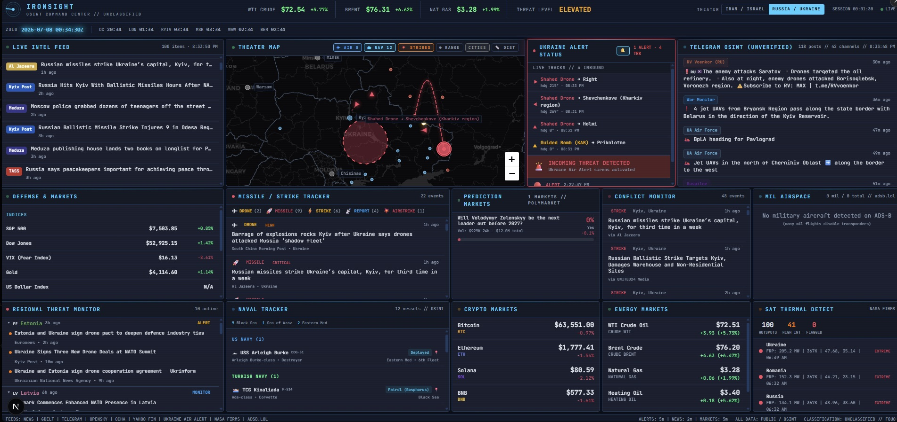

IRONSIGHT
A real-time OSINT command center for active conflicts. News, Telegram, military aircraft and naval tracking, missile alerts, satellite thermal data and markets, on one dashboard. No API keys. Free.

Two theaters, one dashboard
Iran / Israel
The Middle East theater, and the default. Pikud HaOref sirens, Persian Gulf, Red Sea and Eastern Med naval tracking, and Hebrew, Arabic and Farsi sources auto-translated.
Russia / Ukraine
The Eastern Europe theater. Live Shahed drone, cruise and ballistic missile and glide-bomb tracks, oblast air-raid alerts, and Ukrainian and Russian sources auto-translated.
A toggle in the header re-points every panel, map layer and feed to the selected conflict, and remembers your choice.
What's on the screen
Live intel feed
Per-theater RSS aggregation with relevance filtering and sports and entertainment noise removed.
Telegram OSINT
Public channels scraped in real time, with auto-translation.
Theater map
Military aircraft, naval vessels, strike markers, missile arcs, range rings, borders and a distance tool.
Air-raid alerts
Siren and oblast alert status with audio notifications and on-map markers.
Conflict monitor
Categorized events (strikes, defense, diplomatic, nuclear) with per-theater geocoding and severity scoring.
Regional threat monitor
Per-country threat levels across the theater's neighbors.
Military airspace
Live ADS-B military aircraft, region-filtered per theater.
Satellite thermal
NASA FIRMS fire and explosion detection.
Markets
Defense stocks, indices, VIX, gold, USD, oil and gas, crypto, and Polymarket odds for the selected conflict.
Data sources
Everything comes from free, public endpoints. IRONSIGHT doesn't own or generate any of the underlying data. It is a viewer, and every feed is credited to its provider.
| Service | Data |
|---|---|
| Yahoo Finance | Stocks, indices, commodities, oil futures |
| CoinGecko | Crypto prices |
| Polymarket | Prediction-market odds |
| NASA FIRMS | Thermal-anomaly satellite data |
| adsb.lol | Military aircraft ADS-B tracking |
| Tzeva Adom | Israeli missile, rocket and drone alerts |
| alerts.com.ua, Neptun | Ukrainian air-raid alerts and drone and missile tracks |
| Google News RSS, Telegram | News and public channel posts |
See the full source list, the credits, and the legal disclaimer in the README.
Run it yourself
IRONSIGHT needs a server to proxy its feeds, so it can't run on this page. The easiest way to run it is Docker.
git clone https://github.com/NoblerWorks-HQ/IRONSIGHT.git cd IRONSIGHT docker compose up --build
Then open http://localhost:3000. Prefer Node? Run npm install then npm run dev. Built with Next.js, TypeScript, Tailwind CSS and Leaflet.
Explore
IRONSIGHT data sources
Every free OSINT source IRONSIGHT uses: alert APIs, ADS-B aircraft, NASA FIRMS, Polymarket, news RSS and Telegram, with the polling interval of each feed.
Iran / Israel theater
The IRONSIGHT Iran/Israel theater: live Pikud HaOref siren alerts, military aircraft, Gulf and Red Sea naval tracking, translated Telegram OSINT and markets.
Russia / Ukraine theater
The IRONSIGHT Russia/Ukraine theater: live Shahed drone, cruise missile and glide-bomb tracks, oblast air-raid alerts, Black Sea naval tracking and Telegram.
Run IRONSIGHT yourself
Self-host the IRONSIGHT OSINT dashboard in one command with Docker, or run it with Node.js 22. No API keys or environment variables needed.
Frequently asked questions
What is IRONSIGHT?
IRONSIGHT is a free, open-source, real-time OSINT command center. It aggregates more than 50 public sources (news, Telegram, military aircraft, naval tracking, air-raid alerts, satellite thermal data and markets) into one dashboard for the Iran/Israel and Russia/Ukraine theaters.
Does it need API keys?
No. Every source is a free, public, keyless endpoint, so there is nothing to sign up for.
Is there a hosted version?
No. IRONSIGHT needs a server to proxy its feeds, so you run it yourself with Docker or Node.js 22. It takes one command with Docker.
How fresh is the data?
Air-raid alerts poll every 15 seconds, the Ukraine drone and missile tracker every 20 seconds, Telegram and the regional threat monitor every 60 seconds, and news every 90 seconds. Markets and satellite fire data refresh every 10 minutes.
Who owns the data?
The providers do. IRONSIGHT is a viewer that points back to the original sources, and it claims no ownership of any third-party data. Credits and a legal disclaimer are in the README.
Can I add another conflict?
Yes. Each theater is one config object under src/lib/conflicts/, so adding a conflict is mostly a new config file plus registering it.
Built by Nobler Works

Nobler Works builds OSINT tools, real-time dashboards and custom software. If you want something like IRONSIGHT built for your domain, get in touch.
AI agents and multi-agent systems, OSINT and real-time dashboards, cybersecurity software, multi-cloud architecture on AWS, Google Cloud and Azure, and custom software.
More from Nobler Works
War Games
AI strategy simulation where Claude, Gemini and GPT command NATO, Russia and China.
Minecraft Agentic Builder
A crew of four AI bots builds Minecraft worlds from one line of text, live in your browser.
gitGood.dev
Practice questions, coding challenges, system design and cloud certification practice exams.
Cloud, Data, AI and Security: Zero to Hero
Free study guides for 149 certifications across 27 providers, plus hands-on builds.